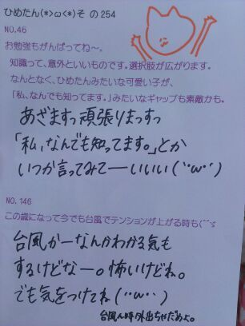

| 2013/03 29 Fri | ひめたん(*>ω<*)そ の277 |
まずお知らせ！
オフィシャルサイトに詳細出てたけどもっ
3/31(日) 個別握手会後ですねー
乃木どこの公録がありまーすー
夜遅くなっちゃうのがネックではありますが
えーテレビかー恥ずかちーとか言わないで
ぜひぜひ来てね♪お待ちしてますー
"恥ずかちー"はちょっと、
ひめたの友達の真似をしたんです
ぶっちょんっちゆーな(｀・ω・´)
そして昨日はその練習とか打ち合わせとかして、 .
今日はまた別件でコメント撮りしてきましたー
詳しいことはまたオフィシャルサイトに
出ると思うので待っててね＼(^^)／
みさ姉たま と 万理華 と一緒だったんっ
みさみさと駅まで
イヤホン半分こして帰ったのー///
これ自慢だよーふへっ

部屋...
部屋きったないので拡大しないでください←
約束だぞ←
言われたら逆に気になるんだよねーとか
そんなこと言う人は撃ちます。ちゅどーん
っていやいやお部屋の話でなくて
今日は りぼんじゃなくていちごを付けてたのー
って話よ＼(^^)／
とまとじゃなくて ぽてとじゃなくて
いーちーご＊
オフィシャルサイトに詳細出てたけどもっ
3/31(日) 個別握手会後ですねー
乃木どこの公録がありまーすー
夜遅くなっちゃうのがネックではありますが
えーテレビかー恥ずかちーとか言わないで
ぜひぜひ来てね♪お待ちしてますー
"恥ずかちー"はちょっと、
ひめたの友達の真似をしたんです
ぶっちょんっちゆーな(｀・ω・´)
そして昨日はその練習とか打ち合わせとかして、 .
今日はまた別件でコメント撮りしてきましたー
詳しいことはまたオフィシャルサイトに
出ると思うので待っててね＼(^^)／
みさ姉たま と 万理華 と一緒だったんっ
みさみさと駅まで
イヤホン半分こして帰ったのー///
これ自慢だよーふへっ
部屋...
部屋きったないので拡大しないでください←
約束だぞ←
言われたら逆に気になるんだよねーとか
そんなこと言う人は撃ちます。ちゅどーん
っていやいやお部屋の話でなくて
今日は りぼんじゃなくていちごを付けてたのー
って話よ＼(^^)／
とまとじゃなくて ぽてとじゃなくて
いーちーご＊

 ひめたん今お財布に
ひめたん今お財布に
いくら入ってますか？（笑）
ちょっとそーゆーのは なんかりあるだなぁー
当ててみてごらん？正解は言わないよ？
勉強のやる気があまり出ない私を
応援して下さい。←
お...お勉強がんばったら...
ちゅーしちゃうぞ...///
さあどうだ。やる気は出たかな
ちなみにひめたんは３月中に課題終わらせる
つもりだったのにやる気が出んのだよっ
道でお金を拾ったら
いくらから交番に届けますか〜?
まさか1円からじゃあないよね〜!?
アルミをばかにしてるとかそーゆーんじゃなくて
１円ならきっと拾わないかなー笑
てかお財布ぽーん落ちてても
怖くて拾えないと思うんだけど(´・ω・｀)
最近ダンスがうまくなりたいと
思ってるんだけどコツとかってあるのかな？？
まずは気持ち！
楽しむことが一番かと＊
ひめたんがダンスを小学校1年生から始めた
きっかけは何ですか？
あのねー自分の意志とかじゃなくて
なんで習ってたんか自分でもわからんけど
姉さんが習ってたから、きっとつられたのね(ω)
でも それがなかったら
今頃ここにいないんだろうから
そーゆ意味では姉さんのおかげです＊
私はディズニーが大好きなんですけど、
ひめたんはディズニーで１番
印象に残ってる思い出とかありますか？
中２の修学旅行でディズニー行ったんだけど
ホテルに4000円置いてったのね
ほらー修学旅行ってお小遣い決まってるからー笑
あと、ディズニー行くときは
毎回必ず耳を買う！コレクター∩^ω^∩
もしプロデュースしてもらえるなら
どんなアイドルをやってみたいですか？
ソロってのはちょっと恥ずかしいから
ユニット希望ではあります♪
ぴんくーのふりふりーを着たーいー
 箸の持ち方、たまに戻ちゃったりしない？
箸の持ち方、たまに戻ちゃったりしない？
(´・ω・`)
もう今でも箸の持ち方は完璧なんですか？
元の持ち方に戻っちゃったりしませんか？
それが戻らんのだよ。どやりんぬ
マネキンの個人PVで最後に串カツが出されたけど、
結局あれは手づかみで食べたの？
ええ、手でがしっとつかんで食べましたとも。
もうひとつ裏話を言うと、撮影で使った箸は
おうちにもって帰りました＼(^^)／
「狼に口笛を」のPVでさ、ゾンビに襲われかけて
伊藤ちゃんずを押し離すシーンあるじゃない。
あの時さ、中元さん二人に何て言って
押し離してるの？
ひたすらきゃーきゃーゆってた気が。笑
はいカットーの瞬間あの現場は
笑顔に包まれます＊
最近いろいろと考えちゃう(´・ω・｀)
それから、
もっといろんな事を知りたいな
って思う今日この頃...
明日本屋さん行こかなー

(＊´・ω・＊)
コメント(162)
2013/03/29 00:12